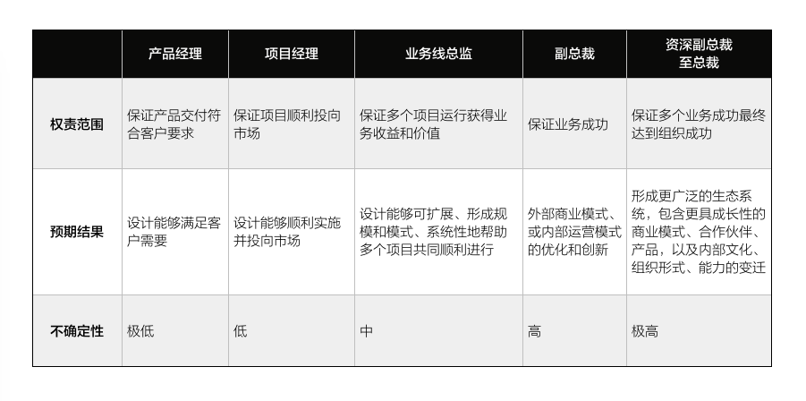
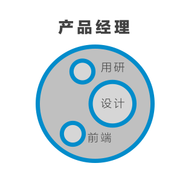
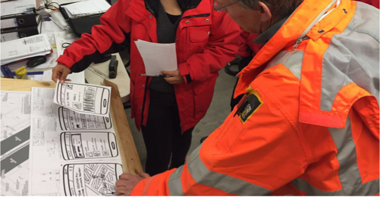
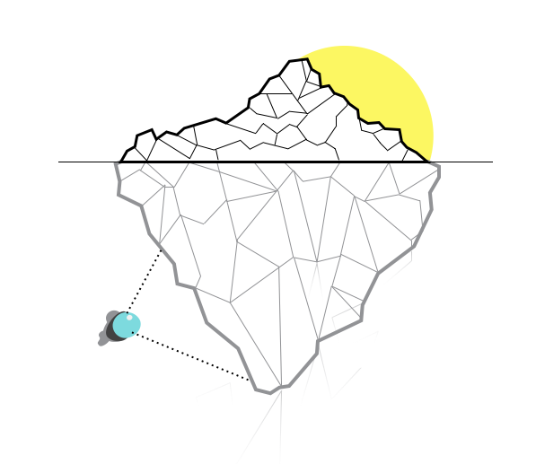
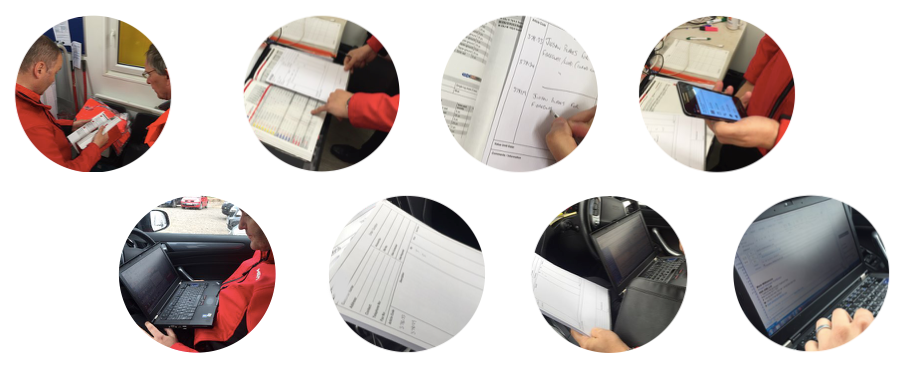
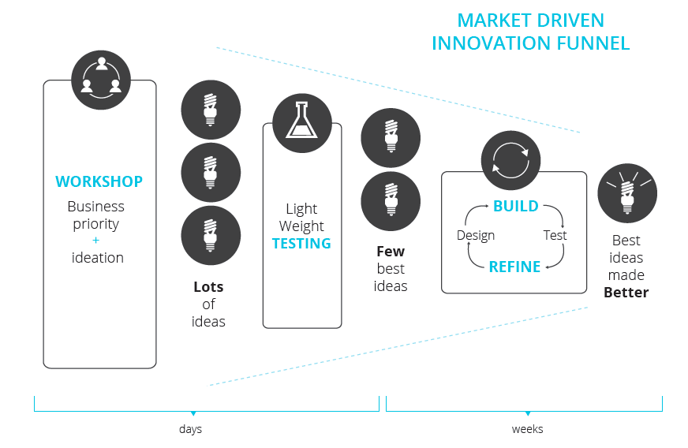
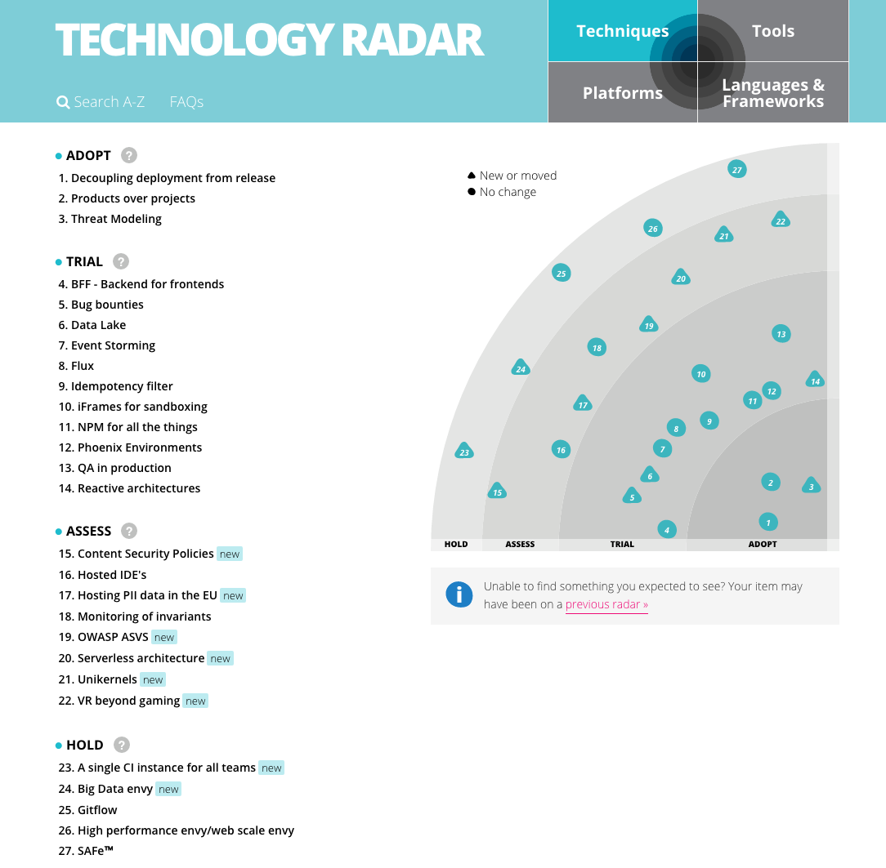
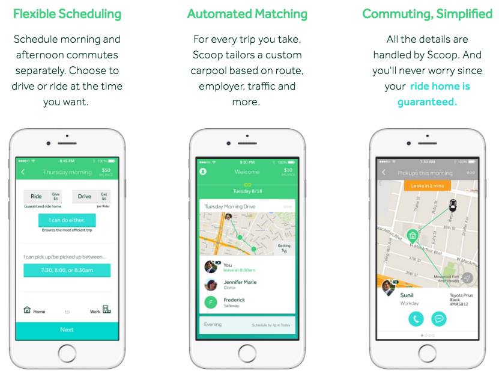
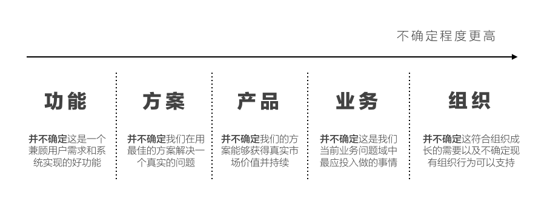

领导力提升的重要指标是「领导者可以在多大程度上承担不确定性（Uncertainty）」，优秀的领导者懂得将事务性的、确定性的工作进行赋权，而承担更具风险和责任的不确定性事务，这使得层级越高的领导者所处上下文、面临的问题、做出的决策越具有不确定性，无论从过程还是结果而言。
而作为设计师，我们需要与不同层级的管理者合作，理解企业不同级别的不确定性帮助我们：
- 更好理解设计期待；
- 采用更好的设计实践；
- 产出合适的设计交付物；
- 采取更好的设计策略。
同时，也帮助我们有一天成长为组织中更具影响力的领导者。那么首先，在设计上下文中，什么是不确定性？
设计的不确定性
你经常会问：「设计是否有效？」，这句话背后代表设计有着极大的不确定性，而这个问题本身并不全面，它缺少了一个重要的前提「对什么而言」，这里的「什么」，在一个组织里，包含了许多，它可能是：
- 用户：用户会喜欢这个设计并使用吗？
- 系统/产品：这个设计能在这个系统或产品中无缝运行吗？
- 业务：这个设计会对业务产生价值吗？；
- 商业模式：这个设计会成为一个持续且规模化的商业模式吗？
- 组织：这个设计会帮助整个组织成功吗？
如果你对一个商业组织有一定理解，你会发现这些问题往往不来自于同一个人，而是来自于处于组织中不同层次的管理者。这便是设计不确定性的基础：
设计的不确定性来自于组织内不同利益相关者（Stakeholders）对于设计结果不同的期待，而这种期待的不同，来自于其权责范围的区别。
因此逻辑是，理解设计不确定性，就是理解企业中利益相关者的职权范围和预期效果。
利益相关者
过去10年里，我作为设计师接触了一个商业组织中从最底层到最高层的利益相关者，他们主要分为5个层次：
- 产品经理；
- 项目经理；
- 业务线总监；
- 副总裁（CMO、CTO等）；
- 高级副总裁至总裁。
组织级别越高的利益相关者拥有更多的资源和资源调动能力、更大却更模糊的责任范围、更复杂的决策系统、以及对风险更高的容忍度。我们分别来看他们相关的权责范围与对设计结果的期待：

设计师如何为不确定性设计
设计师的成长程度与其能够产生影响力的大小成正比，对于产品、项目、业务、商业模式、到组织的影响力决定了一个设计师是否具有职业意义上成功；同时，在组织里，设计师是否能够用设计（交付物、实践、战略、领导力、文化影响）处理从极低到极高的不确定性，亦是设计师精进的不二法门。
我们来看看每个层次上，设计师应该如何为不确定性设计。
进入产品经理层次
传统设计师所处的位置往往包裹在产品经理的职权范围之内，其所承担的角色往往是对某个功能或功能集合进行信息、交互、或视觉的设计，与产品经理职责范围内的其他角色配合，共同达到产品经理所期待的结果——设计能够满足客户需要。

从不确定性的角度来看，设计圈（包括其他角色圈）里的不确定性，要完全小于产品经理圈，产品经理承担的风险更大，换言之，他能够承担的不确定性更高。
这种不确定性的核心来自「我们不确定我们的设计满足客户需要」。作为一个设计师，你所思考的应该是：
我如何才能够和产品经理一起分享这样的不确定性？
于是，我们看到许多设计实践都在帮助设计师在这样不确定性的条件下进行设计，例如以下我们所熟悉的设计实践：
- Design Sprint：在最短的时间里收集客户上下文，完成洞察、设计、测试、验证的过程；
- 迭代式的用户测试：从纸上原型到快速高保真交互原型；
- 基于假设的设计过程（Hypothesis-driven Design）：通过建立假设和验证试验，把设计本身当成用户研究（Design for research, not research for design）；
- 共同设计（Co-design）：和外部用户和内部利益相关者共同设计。
 （在终端用户现场进行设计活动）
进入项目经理层次
设计其实只是项目的一个部分而已，除此之外，作为一个项目经理还需考虑其他方面，它们可能包括：
- 技术实现和项目进程；
- 相关系统集成；
- 多合作方协作；
- 内容准备和迁移；
- 客户准备和迁移；
- 市场营销准备；
- 维护和运营。
在每个方面上，不确定性都可能存在，最直接的是现有设计不可能通过设计在规定时间内完成，设计体验可能大打折扣；一些不易察觉的不确定性还有很多：
例如，某一个大型电商网站的改版，客户引入了多个设计合作方进行协作，结果变得混乱，导致设计反复、需求失去控制、项目交付延期，项目失败。
再例如，某市场研究机构的核心客户系统重新设计和升级，因为没有做好现有客户的迁移工作，导致客户资料丢失、满意度急剧下降。
这些不确定性，都是普通设计师、甚至产品经理不需要考虑的，但是一个优秀设计师的成长，应该把目标定位在真正交付持续为客户所使用的产品，而不仅仅停留在功能设计和产品设计上。
在最近一个设计项目里，我授权了许多跟项目合同、资源准备、技术架构方面的事宜给我的设计师，目的是希望她们能够站在项目交付的角度，体会和分担项目过程中超越功能和产品之外的不确定性。只有理解了这些，她们才能跟组织内权责更大的利益相关者展开对话，用设计的力量进行影响。
进入业务线总监层次
在业务线总监这个层次，我们的进入了完全不同的讨论。业务线总监的职责是在一定「问题域（Problem Space）」中发现、定义、排列问题，并组织、引导、协调解决方案的进行。
通俗来说：总监知道自己的业务范围是什么，她手上有许多问题需要解决，她要做的是厘清哪些需要解决、哪些不需要解决、哪些要增加用于解决的资源、哪些要停止解决。这便是业务线总监最核心的职责：投资组合管理（Investment Portfolio Management）。
管理IPM的核心机构通常是围绕在业务线总监周围的PMO（Project Management Office），这个组织通常汇聚了多个项目的项目经理和核心人员，她们所面对的不确定性是「所辖业务是否增长」。
那么，设计师希望突破单个项目的限制进入业务线总监层次应该如何做呢？
理解问题域
设计师善于理解一个浮于表面的「体验问题」，却很难理解这个简单的体验问题可能由一组在同一问题域中互相关联问题引起。

例如，客户一般拥有多个账户，每个账户中有多个账单寄送的地址，而产品寄送的地方属于产品寄送的地址，这种业务逻辑使得1个客户有x个账户、y个账单地址、z个产品寄送地址，在设计的时候，因为客户通常更经常了解同一个寄送地址下收到的产品，这个「体验问题」背后却有着许多关联问题存在：
- 数据库设计里产品寄送地址属于账单地址的子表、账单地址又属于账户的子表、账户则属于用户表，数据的调取顺序是x-y-z；
- 目前xyz的信息分别存在于多个系统上；
- 目前有若干个项目正在进行中尝试改变底层数据结构、抽取成独立服务。
这些关联性的问题都是这个「体验问题」冰山之下的其他问题，而最重要的是，这些问题在组织中通常已经有相对应的项目在进行解决，而进度、风险、难度都不一，你所面临是错综复杂的一系列问题和解决方案的集合。
业务线总监管理的难度早已不在具体问题或方案，而在于梳理问题之下的其他问题和方案中，寻找到一条最佳策略调动所辖内资源。
系统思维发现问题
在一个真实企业运营中，可能有上百个同时运行的项目，都在解决其各自认为的问题，但不幸的是，问题的独立解决，带来了单点效率提升，却没有办法获得整个业务系统的提升。
设计师应该用更加独特的角度，去发现多点解决方案在整合的情况下所发现的问题，暴露「系统问题」而非一个单点问题。
例如，我们观察了一家企业客户经理整个销售的过程，虽然在每一个信息需求点上都有相对应的解决方案，但当它们整合在一起的时候，变成了混乱。

这种问题的发现帮助业务总监在她的问题域中、多个业务系统间找到系统性解决方案，也许一个简单的系统改进就能使整个系统的效率成倍增长。
这种系统思维发现问题的方式，让设计师在「问题域」的层次上帮助业务线总监思考和处理「不确定性」。
建立更适应「不确定性」的PMO机制
导致多项目管理的「不确定性」可能来自多个方面，例如：紧急的客户需求、市场竞争变化、业务或资源瓶颈突破、大规模投资、某核心项目失败或延期、某高速增长的业务等。
这些因素对一个具有优秀适应性的PMO机制提出了以下要求：
- 灵活的机会管理；
- 兼具主导性和自发性的创新；
- 战略性的投资决策；
- 更精益的需求管理；
- 有机的项目协调。
例如下图是我们为企业创新中机会管理建立的漏斗机制：

更多关于如何打造一个具备以上素质的PMO在此不展开讨论，请关注后续Lean PMO相关的文章。
进入资深副总裁至总裁层次
这个层次的不确定性已经完全脱离了某个项目、产品、问题域、业务线，更多在一个行业（外）和组织（内）的角度处理模糊（Ambiguity），我们分别从外和内的角度分析这些不确定性，来自于哪里？对外来说有以下方面具有极高的不确定性：
颠覆性技术：事实证明，对一个金融机构而言，真正的颠覆并不来自于已经市场化的技术实现，例如采用P2P模式对接借贷双方的技术实现虽在短期挑战了许多传统银行的业务，但从长期来看，现实技术的实现门槛只会越来越低，并不足以撼动传统金融机构的地位。
而某些颠覆性技术，例如区块链（Blockchain）技术所带来的分布式金融体系则有可能真正颠覆传统金融体系，那么对于这个新技术领域的提前布局和准备，是极具不确定性的战略投入。
 （ThoughtWorks的技术雷达每年都会为组织评点最新出现的技术趋势以及对应策略）
当「技术即商业（Every business is a digital business）」越来越多的企业高层决策者所接受，对于颠覆性技术的了解、尝试、和准备，将在未来一段时间内将进入许多高层决策者的视野。
颠覆性模式、产品和服务：我们看到了许多传统行业的企业正在拥抱被认为是「颠覆性」的模式、产品和服务。
(ILLUSTRATION: ROBERT NEUBECKER)
除了在美国发生的「Uber of Everything (Uber一切)」，以及中国版的「互联网+一切」运动，都在刺激着传统企业。美国传统酒精饮料卖场巨头TotalWine与网召快递Instacart进行合作，推出1小时快递服务：
传统豪华车品牌BMW，在今年5月刚收购了位于加利福利亚的车辆共享（Carpooling）技术公司Scoop。

中国速运巨头牵头国内五家速运企业投资「蜂巢科技」，提供智能化的快递柜和相关科技。
这些战略性的投入都标志着传统企业对于新生模式态度的转变，从不屑一顾、到形成战略合作伙伴关系、甚至到全资收购。那么选择谁、怎么选、如何执行、怎样成长这样超不确定性的问题纷至沓来。
组织形式：另外一个部分不确定性来自于企业内部，在一个高不确定性的成长模式下，组织需要什么样的能力、流程、管理模式、激励手段、合作方式、和文化进行配合，同样也是企业决策层所需要面对不确定性因素。
因此，作为设计师，在与企业决策层进行合作时，有以下要求：
- 对颠覆性技术保持了解、并能对其在特定行业的影响形成观点，例如AR/VR技术和4K显示技术对于传统存储行业的机会；
- 对市场中颠覆性模式有较高的敏感度和本质上的分析，例如口袋妖怪VR的流行对于传统零售业有哪些启示；
- 拥有战略思考的能力，对竞争对手的战略布局有深入的思考和快速的信息解析能力；
- 对企业运营有足够的储备，包括领导力、企业行为、并购、预算、企业文化等方面的知识；
- 对企业级IT架构有足够的储备，包括核心系统的划分、基础数据、核心业务流程、服务化等方面的知识。
写在最后
本文很长，它也揭示出一位设计师成长的核心脉络，这便是「永远为更高不确定性设计」，而不是为某个交互、某个产品、某个服务、也不是以客户为中心的设计，设计师终极志向应是「组织的成功」，这里的成功包含了多重因素，包含商业和社会的全面成功。
这也间接推导出设计师所能影响的5个不确定领域（Spaces of Uncertainty）：

过去10年里，我们学会了：
- 设计不再是美、还有用户交互体验；
- 设计不再是用户交互体验、还有以客户为中心的设计；
- 设计不再是只以客户为中心、还有构成整个服务体验的诸多因素。
究其核心都是设计师尝试承担更多不确定性责任以及更大影响力的结果，从不确定性角度思考设计，帮助设计师目标远大的成长。